The complete guide to CLF Trading's pallet system. The system tracks every pallet through its life: receive from principal → assign to lorry → deliver to customer → return to store → return to principal. The pages show one language at a time, English or Bahasa Malaysia. This guide quotes the English buttons exactly as you see them. Versi Bahasa Malaysia.
Updated 26 November 2026 for the new look of the pages, the EN | BM switch, the Accept tab, Pallets on lorries, Pallet history and Edit quantity.
Who uses what: store staff use the Pallet Store page (phone or computer). The office and the manager use the Pallet Dashboard page. Both pages are locked: you sign in with your Staff ID and PIN. Drivers use the POD form as normal.
Pallet Dashboard, section Our pallets. All numbers and names in the pictures of this manual are samples.
Key point:Out = out of the company. It does not always mean "in a customer's hands". Only when a pallet is recorded for a customer does the Dashboard list it under that customer. The rest shows as On lorry, no customer yet.
Pallet life cycle (the full flow)
Principal sends pallets → store: Principal tab, Receive from (into Inside)
Inside → store: Assign tab, onto a lorry (becomes Out) → driver delivers
At the customer → driver, POD form: Drop leave pallets / Collect take back empty pallets
Lorry returns → store: Returns tab (good into Inside, damaged into Damaged)
When enough pile up → store: Principal tab, Return to (leaves the company, Total drops)
2. Sign in and language
Sign in (both pages)
Open the page. A sign-in box covers it. On the Pallet Store it says Pallet Store is locked. On the Pallet Dashboard it says Sign in.
Type your Staff ID.
Type your PIN. No PIN yet? Ask the office.
Tap Sign in. On the Pallet Store a green message Signed in shows your name.
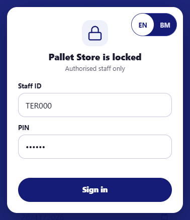
The sign-in box of the Pallet Store. The EN | BM switch is at the top right of the box.
This phone or computer remembers you. One sign-in opens both the Pallet Store and the Pallet Dashboard in the same browser.
If the box comes back with Session ended. Sign in again., sign in again. Nothing is lost.
Enter Staff ID and PIN: one of the two boxes is empty.
Wrong Staff ID or PIN: the box shows the reason in red. After 5 wrong tries the sign-in is locked for 15 minutes. Wait, then try again. If you forgot your PIN, ask the office.
Could not sign in. Check the connection and try again.: check your internet, then tap Sign in again.
Language: EN | BM
Find the EN | BM switch: top right of each page, and on the sign-in box. The page opens in English until you choose.
Tap BM for Bahasa Malaysia, or EN for English.
The words change at once. What you already typed stays. The phone remembers your choice, for both pages.
3. Store staff (Pallet Store page)
The page has 7 tabs: Stocktake, Reconcile, Damage, Assign, Accept, Returns, Principal. The Dashboard button at the top opens the Pallet Dashboard.
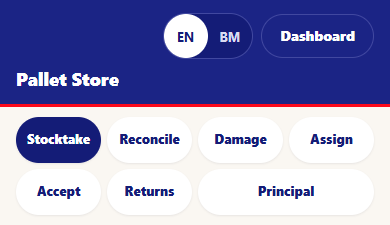
The 7 tabs. The dark tab is the one you are in.
The same on every tab:
How to use opens three short reminder lines. Tap it again to close.
A red star (*) marks a box you must fill.
Staff ID is filled in for you after sign-in, with a green tick and your name under it. If it says Staff ID not found, type your Staff ID again.
3.1 Assign: pallets onto a lorry
Send pallets from Inside onto a lorry, for one shipment.
Tap the Assign tab.
Date: pick the day of the shipment. If you leave it empty, the page uses today.
Lorry no.: type the plate, for example WTA 1234.
Tap Find shipment. A green tick with the shipment number means it is found. You do not type a shipment number.
Read the line under the button: Nothing assigned yet, or Already assigned: with what is on the lorry already.
Under Pallets for lorry, tap + or − to set how many of each pallet type go on the lorry. Each line shows how many are Inside now.
Check that Staff ID shows your name.
Tap Assign pallets. A green message Assigned shows the lorry and the shipment.
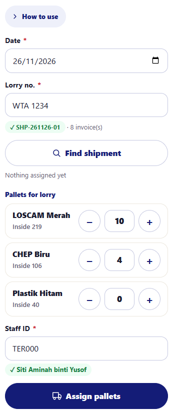
Assign: shipment found, 10 and 4 pallets set, ready to tap Assign pallets.
No shipment for WTA 1234 on 2026-11-26: check the lorry no. and the date, then tap Find shipment again.
The lorry has several shipments that day: the page says shipments on this date. Choose one:. Pick the right one from the list.
You cannot assign more than you have. The page puts the number back and shows Only 219 Inside.
Could not check what is already assigned. Tap Find shipment again before assigning.: do that first, so you do not load the same pallets twice.
If the message says some lines are NOT saved, it names them. The saved lines go back to 0. Tap Assign pallets again to send only these.
3.2 Accept: the driver confirms what was loaded
Use this tab when the driver checks the pallets with you at the store. (A driver can also correct the count alone on the POD form, see part 5.)
Tap the Accept tab.
Shipment date: leave it on today, unless the lorry left on another day.
Lorry no.: type the plate.
Tap Find shipment. Under Assigned pallets you see one line per pallet type, with Assigned 10.
The driver checks each line. Count correct: leave it, the Correct button stays green.
Count wrong: tap − or + until Received shows what the driver really got. (Tap Correct to put the assigned number back.)
Driver name: type the driver's name.
Tap Confirm received. A green message Confirmed appears.
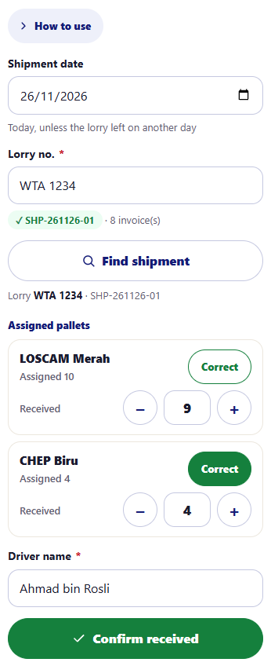
Accept: the driver received 9 LOSCAM, not 10. CHEP is correct.
No pallets assigned to this shipment yet: nothing was assigned to this shipment. Check the lorry no. and the date.
If you picked another day, an orange tag Not today: 2026-11-25 shows next to the shipment. Check that this is the day you want.
If some lines are NOT confirmed, only those lines stay on the screen. Tap Confirm received again.
3.3 Returns: receive from the lorry
When the lorry comes back, the store counts and receives. This is the most important checking point.
Tap the Returns tab.
Shipment date: leave it on today, unless the lorry left on another day. Then pick that day.
Lorry no.: type the plate.
Tap Check lorry. Under Still on lorry each pallet type shows Expected: and a number. That is what should still be on the lorry.
Count the real pallets. Type the numbers in Good and Damaged.
Good + Damaged = Expected: the line shows Matches expected.
Fewer than expected: the line shows Short 2. Left at which customer? Choose the customer. The quantity next to it must be the missing number.
More than expected: the line shows Extra 1. From which customer? Choose the customer who returned them.
Tap Receive all. A green message Received lists every line. Good pallets go into Inside, damaged pallets into Damaged.
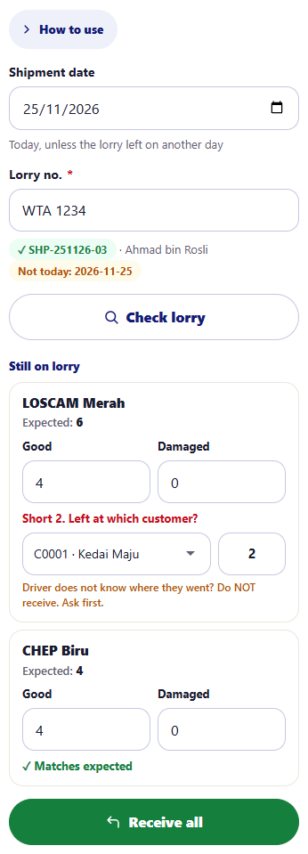
Returns for a lorry that left yesterday (tag Not today). 2 LOSCAM are short and are booked to the customer who kept them.
The page itself warns: Driver does not know where they went? Do NOT receive. Ask first. This step exists to force that talk, so pallets do not just vanish.
If you tap Receive all without choosing the customer, nothing is saved. A red message says to choose the customer and that the quantity must match.
After saving, the list loads again. Nothing left on this lorry means all pallets of this shipment are accounted for.
The page takes one customer per pallet type for a shortage. If the missing pallets were left at two different customers, tell the office before you receive.
Some lines NOT saved: The list has reloaded. Count again what is still shown.
If the list does not load, you see a red box, not an empty lorry:
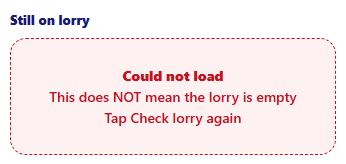
Could not load does not mean the lorry is empty. Check your internet and tap Check lorry again.
3.4 Principal: return to / receive from the principal
Pallets in and out with the pool companies (LOSCAM, CHEP).
Choose
When to use
Effect
Return to
You send pallets back to the principal: good ones from Inside, or broken ones from Damaged.
Stock goes down.
Receive from
The principal sends pallets in.
Stock goes up (into Inside).
Tap the Principal tab.
Pallet: choose the pallet type.
Tap Return to or Receive from.
For Return to only: under From, tap Inside or Damaged.
Type the quantity (How many returned? or How many received?). A strip under the box shows the balance after saving.
Reference no.: type the principal's DO or note number. It is required.
Check Date and Staff ID.
Tap Return to principal (or Receive from principal). A green message Returned to principal (or Received from principal) appears.
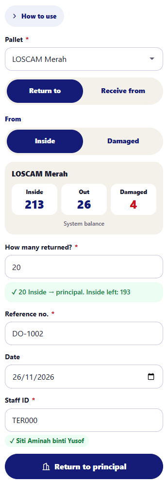
Return 20 good LOSCAM pallets to the principal, with the DO number as reference.
Enter reference no.: the reference box is empty. Nothing is saved without it.
You cannot return more than you have: the strip shows how many there are, and the page refuses with Only 213 in the system.
3.5 Stocktake: make the system follow your count
Stocktakereplaces the system balance with the number you counted. Old records are kept.
Tap the Stocktake tab.
Pallet: choose the pallet type.
Which stock: tap Inside, Out or Damaged. The card System balance shows what the system has now.
Your count: type the number you really counted. A strip shows the difference at once.
Check Date and Staff ID.
Tap Save count.
If your count is different from the system, a box asks Change the balance? It shows System, Your count and Change. Read the numbers.
Tap Yes, save if they are right. Tap Cancel to go back: nothing is saved.
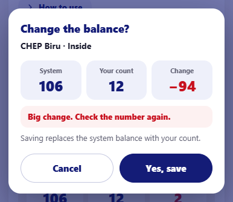
The confirm box. Here 12 was typed, not 120: the red line Big change. Check the number again. catches it.
After saving, a green message Count saved shows the new balance.
3.6 Reconcile: compare only
Reconcile only compares your count with the system and records the difference. The balance does not change. The difference shows on the Dashboard under Stock count for the office to see.
Tap the Reconcile tab.
Choose Pallet and Which stock, as in Stocktake.
Your count: type the number you counted.
Note: add a short note if you want.
Tap Save check.
Same as the system: green message Count matches. Done.
Not the same: orange message Difference recorded, and a part Manager adjust opens below.
Manager adjust (manager only). The manager can set the system balance to the real count:
Manager PIN: the manager types the manager PIN.
Reason: type why, for example "miscount".
Tap Adjust balance. A green message Balance adjusted shows the old and the new balance.
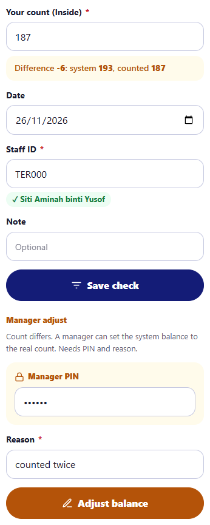
Reconcile found a difference of −6. The manager types the PIN and a reason, then taps Adjust balance.
Wrong or missing PIN / Balance NOT changed.: type the right manager PIN and tap again.
Sent, not confirmed: the page got no answer. Check the balance in 1 minute before you send again.
3.7 Damage: broken and repaired pallets
Mark pallets as damaged (Inside or Out → Damaged). A photo is required.
Tap the Damage tab.
Pallet: choose the pallet type.
From: tap Inside or Out.
How many damaged?: type the number.
Photo: tap Take photo and take a clear picture of the damage. You can add up to 10.
Reason: add one if you want, for example "forklift".
Check Date and Staff ID.
Tap Mark damaged. A green message Marked damaged appears.
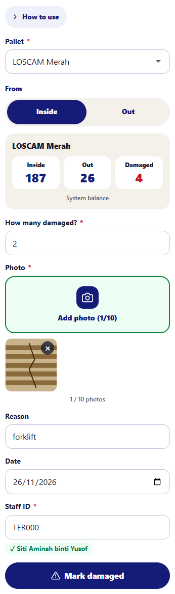
Damage: 2 pallets, one photo added (sample drawing), ready to tap Mark damaged.
Take at least 1 photo: no photo yet. Nothing is saved without a photo.
Sent, not confirmed / Check the Dashboard in 1 minute before sending again.: do exactly that. Your photos stay on the screen.
Repaired pallets (Damaged → Inside), lower on the same tab under Repaired pallets. No photo needed.
Pallet: choose the pallet type.
How many repaired?: type the number. It cannot be more than the Damaged number on the card.
Check Date and Staff ID.
Tap Mark repaired. A green message Marked repaired appears.
3.8 When something is not saved or not loaded
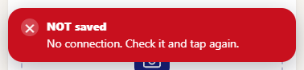
A red message always says what to do next.
NOT saved with No connection. Check it and tap again.: check your internet, then tap the same button again. This is safe. If the first try did reach the system, the answer is Already saved and it is not counted twice.
NOT saved with another reason: read the reason, correct it, tap again.
Could not load: the page could not read the data. It is not empty. Check your internet and tap Find shipment or Check lorry again.
Sent, not confirmed (photo and manager PIN steps): wait 1 minute and check first. Send again only if it is really not there.
4. Office and manager (Pallet Dashboard page)
Tap a wide picture in this part to see it full size.
The Dashboard is for reading. Only one thing can be changed here: the quantity of an entry, by a manager (4.7).
Refresh reads the newest numbers. Next to it you see when the numbers were read, for example Updated 10:05.
What do these numbers mean? under a section opens a short explanation.
Pallet Store at the top opens the store page.
The sections, from top to bottom: Our pallets, Stock count, Pallets on lorries, Out by customer, By pallet type, Pallet history, Manager actions.
4.1 Our pallets
The 4 numbers for the whole company: Inside, Out, Damaged, Total. See part 1.
4.2 Stock count
Shows every count from the store's Reconcile tab that did not match the system and is still open.
All counts match.: nothing to do.
Otherwise a table: System = what the system has, Counted = what the store counted, Difference = Counted − System.
Red row with a minus = pallets short. Yellow row with a plus = extra pallets found.
Every pallet entry of one month, newest first. Use it to see who recorded what, and to find a wrong entry.
Scroll to Pallet history. It opens on this month.
Another month: tap ‹ for the month before, › for the month after, or pick a month from the list (the last 36 months).
One kind of entry only: open the list All actions and pick one, for example ASSIGN.
Changed entries only: tick Edited only.
The number of entries shown is at the right, for example 13 entries. Columns: Date, Action, Pallet, From → To, Qty, Lorry · Customer, By (who recorded it), Edited. EXT = outside CLF (the principal).
Pallet history. The entry of 18 Nov was changed before: old quantity struck out, new quantity, who, when and why.
4.7 Edit quantity (manager only)
For an entry with a wrong quantity, for example a typing mistake. It needs the manager PIN and a reason. Stock numbers follow at once.
In Pallet history, find the entry. Use the month and the action list to find it faster.
Tap Edit at the end of its row. The box Edit quantity opens. It shows the entry and the quantity Now.
New quantity: type the right number (a whole number, 0 or more).
Reason: type why you change it.
Manager PIN: the manager types the manager PIN.
Tap Save. (Cancel closes the box and changes nothing.)
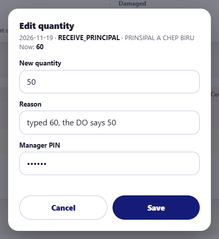
Edit quantity: 60 was typed by mistake, the DO says 50.
When it is saved, a green line says Saved: quantity 60 → 50. and the whole Dashboard is read again. The row now shows the old quantity struck out, the new quantity, and under Edited: who changed it, when, and why. The old quantity is never lost.
After saving: the row of 19 Nov shows 60 struck out, 50, and who / when / why.
What is refused:
No Edit button on: REVERSE and ACCEPT entries, cancelled entries, and a loading the driver already corrected. These cannot be edited.
Below zero. If the new quantity would make the stock of that pallet go below zero, nothing is saved. The message starts Not saved: stock for this pallet would go below zero and gives the figure. Another entry for this pallet is probably wrong too: correct that one first.
Wrong manager PIN. Nothing was changed.: type the right PIN and tap Save again. After 5 wrong PINs, editing is locked for 15 minutes. Wait, then try again.
Same as now. Nothing to change. / Enter a reason. / Enter the manager PIN. / Enter a whole number, 0 or more.: fill the box that is named.
Your sign-in has ended. Nothing was changed. Refresh the page and sign in again.: do that, then edit again.
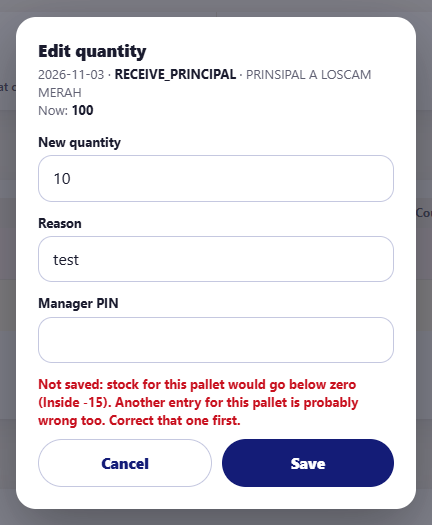
Refused: the change would make the stock go below zero. Nothing was saved.
No answer from the server. If the page gets no answer, the box stays open with this message:
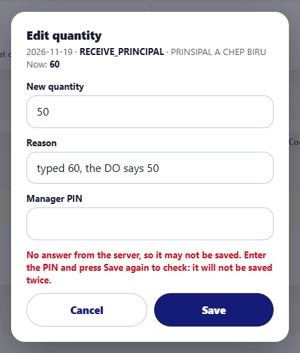
No answer: type the PIN again and tap Save again.
Leave the quantity and the reason as they are.
Type the manager PIN again.
Tap Save again. it will not be saved twice: the change is made once only.
If Pallet history shows Editing is not switched on yet. and no Edit buttons, tell the office.
4.8 Manager actions
The list of manager and office corrections: who, when, why.
Tap Show list. (Hide list closes it.)
Tap All, ADJUST, REVERSE, OPENING or RECONCILE to see one kind only.
ADJUST = manual correction. REVERSE = cancels an earlier entry. OPENING = starting stock. RECONCILE = change made after a stock count.
Entries confirmed with a PIN are listed first and marked PIN.
The list only shows entries from 25 Nov 2026. Older corrections are not shown here. They are still in the records, and you can see them month by month in Pallet history.
No manager actions since 25 Nov 2026.: nothing to show yet.
Part of the data did not load. Press Refresh. Do not read these sections as "none".
5. Driver (POD form)
Drivers do nothing complicated. The pallet steps follow the delivery. Pictures of these steps are in the POD driver manual.
1. Pallets on lorry: if the count is right, do nothing
The driver opens the POD form as usual. When the store has assigned pallets to the shipment, a box Pallets on lorry lists them above the shops.
Count correct: do nothing. The box says Correct? Do nothing.
Count wrong: tap Wrong count? Fix here.
Change each number to what you really received.
Tap Send the count you received. A green message Correction sent appears.
2. Drop / Collect at a shop (+ photo)
Fill this in before you tap Save on the shop's card. The pallets are sent together with the Save.
On the shop's card, tap Pallets at this stop?
Choose the pallet type.
Drop = how many pallets you leave at this shop. Collect = how many empty pallets you take back.
Pallet photo (optional): take one as proof. Strongly recommended, it settles any dispute later.
Tap Save. A green message Pallet recorded (or Pallet collected) appears.
Pallets never block the delivery. If a red message says Pallet NOT recorded, the POD is still saved. The message says: POD is saved. Tell the office the pallet count. Do that.
3. Bring the pallets back to the store
The driver does not "return" pallets in the system. Just bring back the undelivered and collected pallets. The store receives them with the Returns tab (3.3).
The old driver page "Pallet Return" is now only a notice:
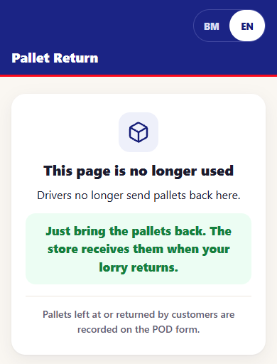
The old Pallet Return page: This page is no longer used.
6. A few firm rules
Pallets missing for no reason: when receiving the lorry, ask until it is clear, and book them to the customer who kept them. Do not receive blindly.
Pallets in or out with a principal must have a Reference no. It is your proof when reconciling with the pool company later.
Damage reports must have a photo.
Records are never deleted. A wrong stock number is corrected with Stocktake, or Reconcile and Manager adjust. A wrong quantity in one entry is corrected by a manager in Pallet history. Every change keeps who, when and why.
NOT saved means not saved. Tap the same button again. Do not type the entry a second time in another way.
Could not load and Not loaded never mean "none". Load again before you decide anything.
Your PIN is personal. Do not lend it. If someone else knows it, tell the office.
CLF Trading · Pallet System · This manual follows the system's actual buttons (26 Nov 2026) · If the system is updated, follow the screen.